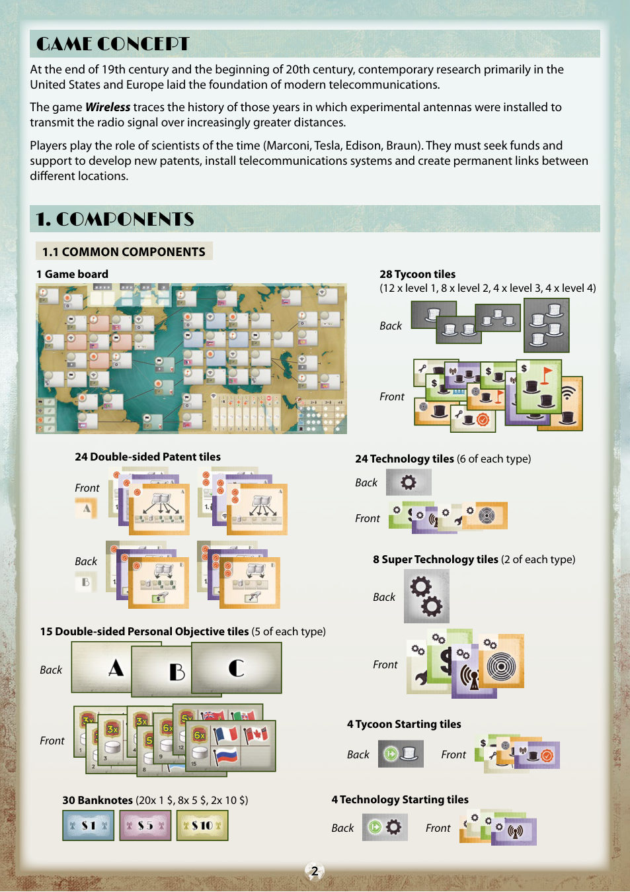
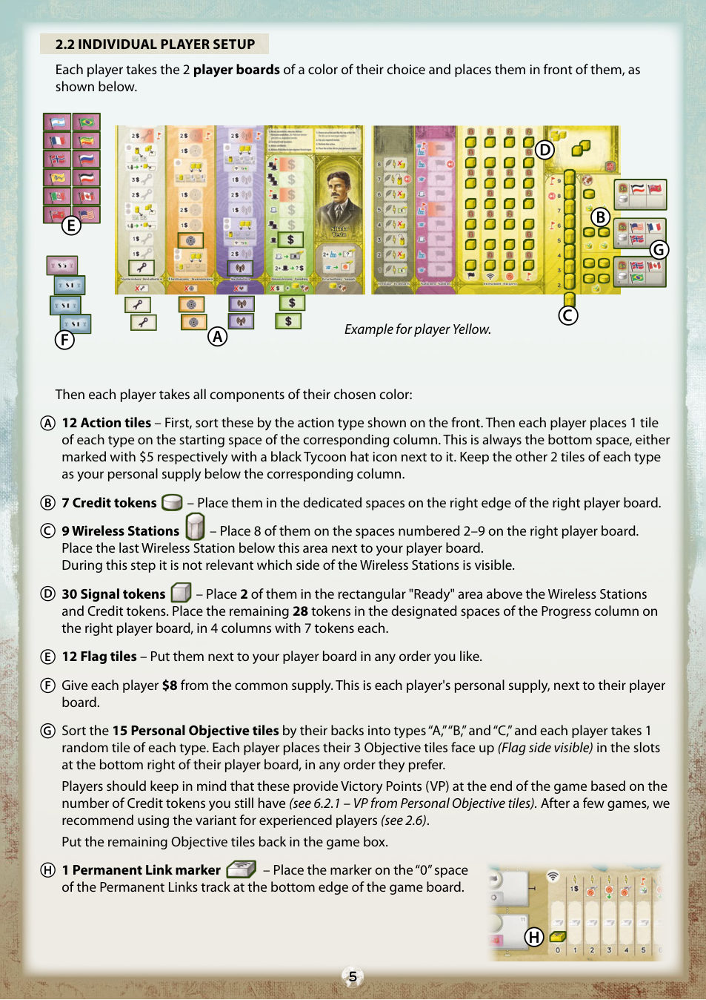
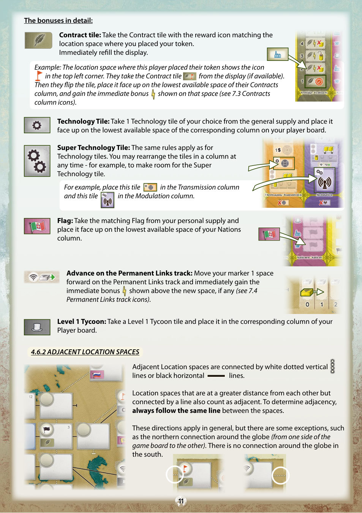
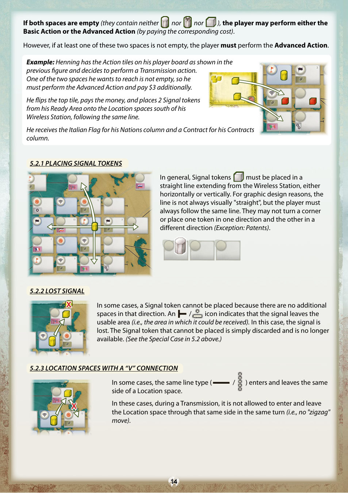
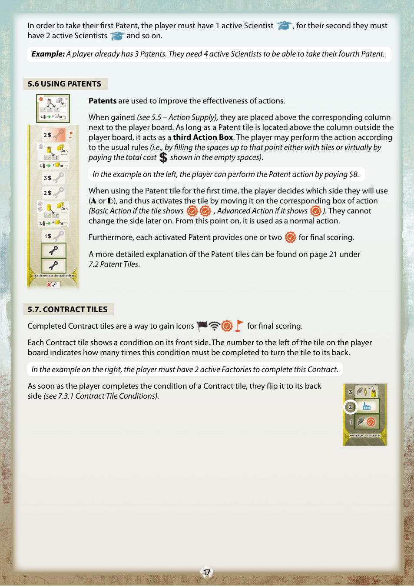
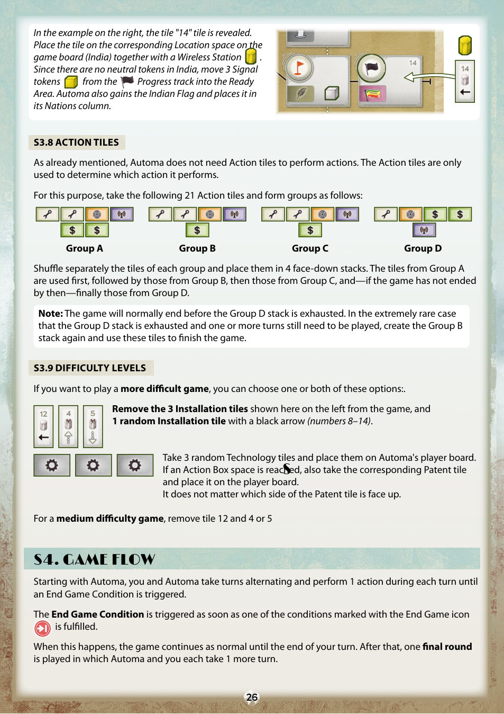
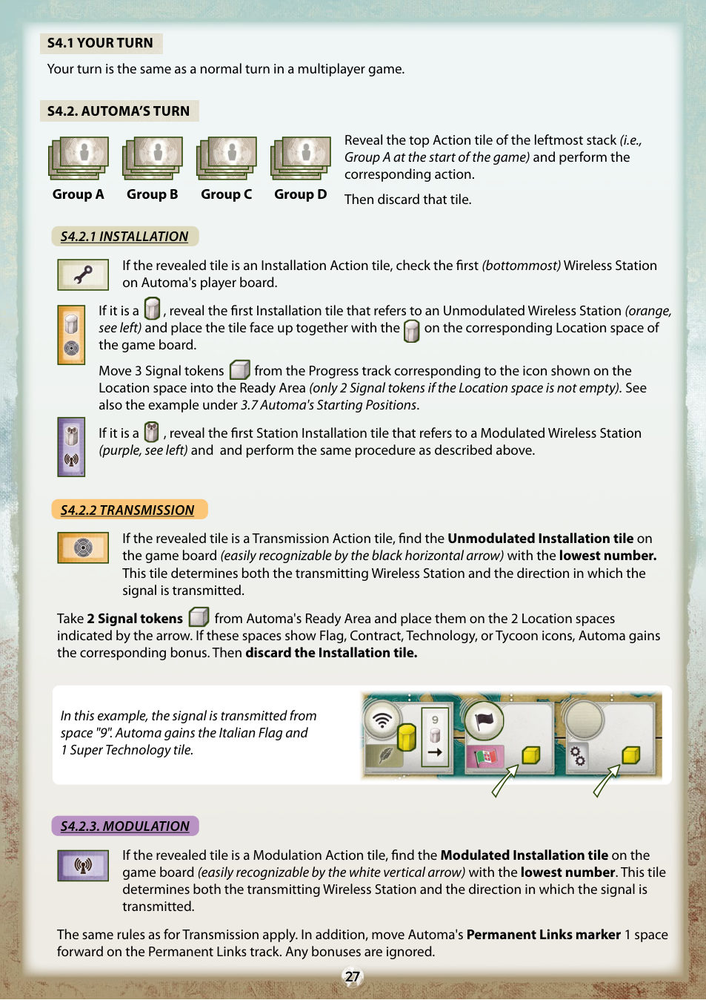
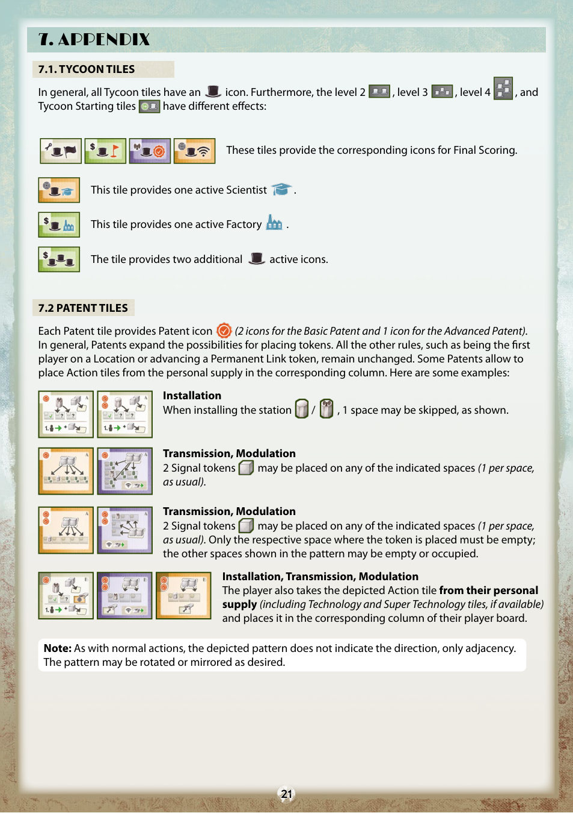
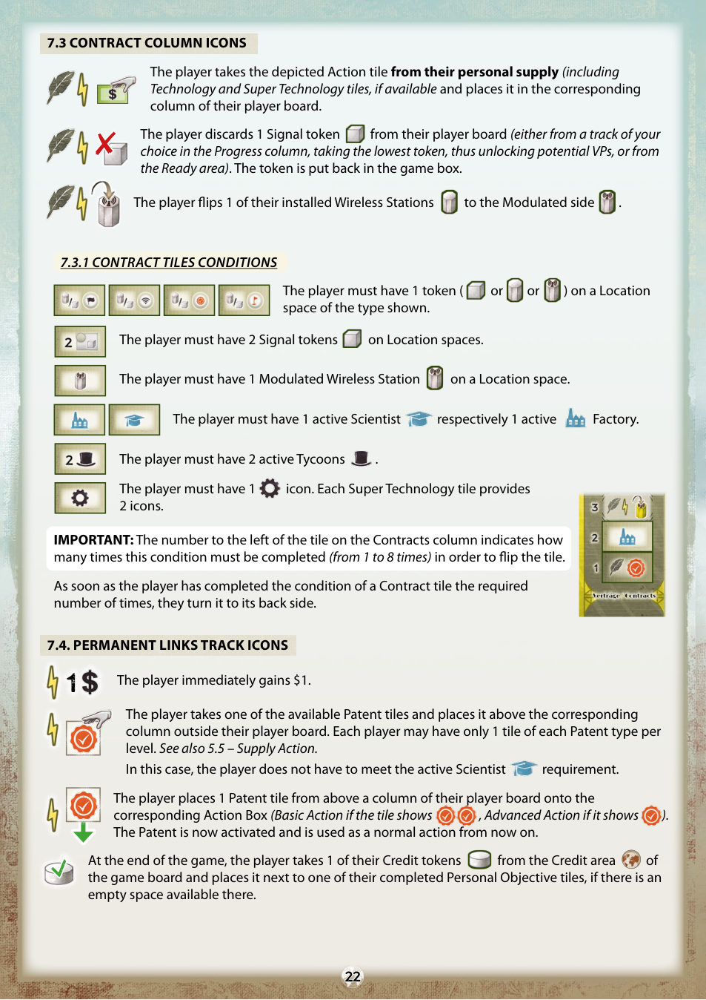

无线时代
玩家扮演那个时代的科学家——马可尼、特斯拉、爱迪生、布劳恩——去争取资金与支持，开发新专利，架设通信系统，在不同地点之间建立永久链路。
01游戏概念
你是指挥一场技术竞赛的科学家。每回合从自己版图上「拆掉」一块行动板块作为代价，换取一次更强的行动——板块越厚，行动越便宜；而板块越拆越薄，同一套行动就越来越难支撑。
游戏通过若干轮进行，每轮每位玩家各行动一次。你要在四种方向里选择重心：抵达更多国家、建立永久链路、取得专利、或是推进版图上的目标位；此外，个人目标板块会在终局按你剩余信用标记的数量给你加分。
02配件
公共配件
| 配件 | 数量 | 说明 |
|---|---|---|
| 钞票 | 30 张 | 20×1 元、8×5 元、2×10 元 |
| 游戏版图 | 1 块 | 52 个大型格位＝世界各地地点 |
| 大亨板块 | 28 块 | 1 级 12 块、2 级 8 块、3 级 4 块、4 级 4 块（背面礼帽数＝等级） |
| 技术板块 | 24 块 | 4 种类型各 6 块 |
| 超级技术板块 | 8 块 | 4 种类型各 2 块 |
| 大亨起始板块 | 4 块 | 双面 |
| 技术起始板块 | 4 块 | 双面 |
| 专利板块 | 24 块 | 双面（A / B 两面） |
| 个人目标板块 | 15 块 | 双面，A / B / C 三类各 5 块 |
| 合同板块 | 40 块 | 4 种类型各 10 块 |
| 地点板块 | 20 块 | 4 种类型各 5 块 |
| 地点起始板块 | 4 块 | 双面：美洲面 / 欧洲面 |
| 起始玩家标记 | 1 个 | |
| 计分纸 | 1 本 |
个人配件（每种玩家颜色）
| 配件 | 数量 | 说明 |
|---|---|---|
| 玩家版图 | 2 块 | 每种颜色 2 块，共 8 块 |
| 信号标记 | 30 个 | 每种颜色 30 个，全游戏共 120 个 |
| 信用标记 | 7 个 | 每种颜色 7 个，全游戏共 28 个 |
| 行动板块 | 12 块 | 每种颜色 12 块（4 类各 3 块），全游戏共 48 块 |
| 旗帜板块 | 12 块 | 每种颜色 12 块，全游戏共 48 块 |
| 无线电基站 | 9 个 | 每种颜色 9 个，全游戏共 36 个；双面：未调制面 / 调制面 |
| 永久链路标记 | 1 个 | 每种颜色 1 个 |

03设置
3.1 公共设置
- 把游戏版图在桌面中央展开。版图上的 52 个大型格位代表世界各地的不同地点。
- 洗混 20 块地点板块（背面朝下），随机放到地点格位左上角所有空白、未印刷的格位上；随后全部翻到正面，让图标朝上（不会剩板块）。
- 把大亨板块按背面分成 4 个等级（礼帽数量＝等级），每一级分别洗混背面朝下（礼帽可见），沿版图上缘叠在「大亨区」对应格位的版图之外。每一叠各抽 2 块，正面朝上放在该叠下方的专属格位。
- 把合同板块按背面分成 4 叠，分别洗混背面朝下，放在版图左下「合同区」外侧对应格位的左侧。每叠抽 1 块，正面朝上放在版图上该叠旁的专属格位。
- 把专利板块按正面类型分成 6 叠，放在版图旁所有人伸手可及处。
- 把技术板块按类型分成 4 叠正面朝上放在版图旁；超级技术板块同样处理。技术与超级技术板块实际上等同于行动板块。
- 钞票按面值分叠放在版图旁。版图旁的所有板块构成公共供应区。
3.2 个人设置
每位玩家选择一种颜色，取该色的 2 块玩家版图放在面前，然后拿取该色的全部配件：
- 12 块行动板块：先按正面的行动类型分类，然后每类各拿 1 块放到对应栏的起始格——起始格永远是最下面那一格，旁边标着「5 元」或黑色礼帽图标。每类剩下的 2 块作为个人供应，放在该栏下方。
- 7 个信用标记：放在右侧玩家版图右缘的专属格位。
- 9 个无线电基站：其中 8 个放在右侧版图编号 2–9 的格位；最后一个放在该区域下方、版图旁。这一步不看基站的哪一面朝上。
- 30 个信号标记：2 个放在基站与信用标记上方的矩形「待发区」；其余 28 个放在右侧版图「进度区」的指定格位，4 条轨道各 7 个。
- 12 块旗帜板块：以任意顺序放在版图旁。
- 从公共供应区给每位玩家 8 元，作为个人资金放在版图旁。
- 个人目标板块：按背面分成 A、B、C 三类，每位玩家每类随机抽 1 块，共 3 块，以自己喜好的顺序正面朝上（旗帜面可见）放在版图右下角的槽位。其余放回盒中。
- 1 个永久链路标记：放在版图下缘「永久链路轨道」的 0 格。
3.3 起始位置
- 随机决定起始玩家，把起始玩家标记交给他。
- 随机取与玩家人数相同的地点起始板块，全部翻到同一面（美洲面或欧洲面，由全体玩家商定）。不足 4 人时，剩余的放回盒中。这些板块决定了围绕美国国旗或德国国旗的 4 个起始地点——板块上的图标与对应起始地点左上角的图标一致。
- 随机取与人数相同的大亨起始板块并全部翻到正面；再取同样数量的技术起始板块并翻到正面。不足 4 人时，剩余的放回盒中。
- 把选出的板块随机组成每 3 块一组的若干组（每组 1 块地点、1 块大亨、1 块技术）。
- 从回合顺序最后一位玩家（起始玩家右手边那位）开始，按逆时针，每人选 1 组，然后：
- 把自己版图旁的无线电基站放到地点起始板块指定的地点，未调制面朝上；
- 从进度区中与该起始地点图标相符的那条轨道取 3 个信号标记放进待发区（对应 6.1 架设行动的后续效果）；
- 把大亨起始板块与技术起始板块放到自己版图上对应栏最低的可用格位。
3.4 少人局补充与老手变体
2 人局
在每一个满足以下条件的地点各放 1 个中性信号标记（用未使用的颜色）：该地点左下角有旗帜图标，或左下角有合同图标。
3 人局
在每一个左下角有技术或超级技术图标的地点各放 1 个中性信号标记。
老手变体（替代 3.2 中抽取个人目标板块的那一步）
把 A、B、C 三类个人目标板块按类分列摆出，列数等于玩家人数，全部翻到旗帜面朝上。然后：
- 从起始玩家右手边那位开始，按逆时针，每人选 1 块；
- 再从起始玩家开始，按顺时针，每人选第 2 块；
- 最后再从起始玩家右手边那位开始，按逆时针，每人选第 3 块。

04游戏总览
游戏进行若干轮，每轮按玩家顺序各进行 1 个回合。
你的回合中，必须先从自己版图某一栏移除 1 块行动板块作为代价，然后执行该行动；通常还要额外支付金钱（补给行动例外）。
行动板块越多，能执行的行动越强、越便宜；但每执行一次，同类板块的存量就越少。
行动的具体内容见第 6 节。它们能让你获得金钱或补充行动板块，也能带来一次性效果，或是以永久效果强化你的引擎：工厂、大亨、科学家，以及各种会改变行动方式的专利，从而导向不同的策略。
你在自己的版图与游戏版图上持续记录成果：抵达的国家、永久链路、完成的合同。
终局时，世界地图上的扩张程度很重要。每位玩家要在 4 种策略中决定重心（对应右侧版图进度区的 4 条轨道）：
- 抵达特定国家（以旗帜表示）
- 建立永久链路
- 取得专利
- 推进版图上的目标位
此外，完成的个人目标板块也会带来胜利分。终局胜利分最高者获胜；极少数平手情况下，平手玩家共享胜利（就像马可尼与布劳恩共享诺贝尔奖那样）。
05基本概念
5.1 金钱与标记
金钱：需要付钱时，把个人资金里的钞票放进公共供应区；获得金钱时，从公共供应区取来放进个人资金。任何时候都可以兑换钞票面值。
| 标记 / 棋子 | 含义 |
|---|---|
| 无线电基站 | 代表发射站，无线电信号由此发出。未调制面＝发射未调制信号；调制面＝发射调制信号。 |
| 信号标记 | 代表基站发出的信号（未调制或调制）。 |
| 信用标记 | 代表「新科学发现的承诺」。在请求支持时（即融资与补给行动）被「花掉」。 |
| 永久链路标记 | 在版图下缘轨道上的位置，代表永久链路进度。 |
5.2 玩家版图结构
玩家版图由 8 个栏加 3 个附加区域组成。从左到右依次是：
- 架设、传输、调制三栏：游戏中的主要行动都在游戏版图上执行。
- 融资栏：通过行动获得金钱。
- 补给：用这个行动补充各栏的行动板块，并取得专利。它不占单独的栏位。
- 合同栏：存放你作为奖励取得的合同板块。
- 国家栏：放置你以无线网络抵达的国家（地点）的旗帜。
- 进度区：记录你在若干方面的进展，并在终局按已移除的信号标记给分。移除的信号标记越多，进展越大、得分越多。它由 4 条独立轨道组成，不对应单独的行动。
前三栏（架设、传输、调制）各有 6 个行动板块位与 2 个行动格。行动板块必须从下往上填。
要执行前 4 栏中的行动，必须在结算行动之后从该栏移除 1 块行动板块，放回该栏下方的个人供应。
到所选行动格为止的所有格位，都必须被覆盖——要么真的放着行动板块，要么按空格上标示的金额付钱「虚拟覆盖」。
执行前 4 栏的行动分 4 步：
- 选定行动，把该栏最上面的行动板块翻面，让所有人看到你选了哪个行动。栏内板块的顺序随时可以调整。
- 为到所选行动格为止的空格支付金钱。
- 执行所选行动格上的行动。
- 把行动板块正面朝上放回该栏下方的个人供应。
国家栏与融资栏左侧印有各种图标：大亨（礼帽）、工厂、科学家（学士帽）、目标位（旗帜）。这些图标只有在其右侧有板块时才生效；而栏内板块上的图标始终生效。
行动板块、技术板块与超级技术板块
三者执行行动时的作用完全相同。除起始行动板块外，玩家还能在游戏中获得技术板块与超级技术板块；它们的功能与行动板块一样，区别是：超级技术板块覆盖 2 个格位（这 2 格都视为「已付」）。
合同或大亨板块一旦被取走，立刻从对应牌堆补翻一块。技术板块与超级技术板块只要你有资格拿、且尚未被拿光，就始终可选（4 种类型任选）。这些板块是刻意限量的：拿不到就是拿不到。
5.3 版图与地点奖励
游戏版图的大部分由代表各国地点的格位构成。每个地点的投资者与居民会奖励你在某些方面的进展：奖励印在每个地点格位的左上角，4 种奖励类型正好对应右侧版图进度区的 4 条轨道。
| 奖励类型 | 原文 | 对应 |
|---|---|---|
| 网络扩张 | Network Expansion | 目标位 |
| 各国网络存在 | Network Presence in Different Nations | 旗帜 |
| 创新 | Innovation | 专利 |
| 网络整合 | Network Integration | 永久链路 |
地点奖励
每当你在一个地点格位放置基站或信号标记，而该格左下角有合同、技术、超级技术、旗帜、大亨、或「推进永久链路」图标时，立刻获得对应的地点奖励（把相应板块放到自己版图上，或在永久链路轨道上前进 1 格）。
每位玩家对同一个地点只获得一次奖励：第一次在那里放置标记时获得。之后再在同一地点放自己的第二个标记，不再获得。
| 左下角图标 | 奖励内容 |
|---|---|
| 合同 | 取走与该地点奖励图标相符的合同板块，并立刻补充展示区。翻到正面，放到自己合同栏最低的可用格位，并获得该格位上的即时奖励（见附录 C）。 |
| 技术 | 从公共供应区任选 1 块技术板块，正面朝上放到自己版图对应栏最低的可用格位。 |
| 超级技术 | 规则同技术板块。栏内板块随时可以重排——例如为了给超级技术板块腾出 2 格。 |
| 旗帜 | 从个人供应取对应的旗帜，正面朝上放到自己国家栏最低的可用格位。 |
| 推进永久链路 | 在永久链路轨道上前进 1 格，并立刻获得新格位上方标示的即时奖励（若有，见附录 E）。 |
| 1 级大亨 | 取 1 块 1 级大亨板块，放进自己版图对应的栏。 |
地点相邻
相邻的地点格位由白色竖向虚线或黑色横线相连。彼此距离较远、但有线相连的格位同样算相邻——判断相邻时，始终沿着同一条线走。
这些方向总体上适用，但有少数例外，例如环绕地球北部的连接（从版图一侧到另一侧）。南部没有环绕地球的连接。

06回合与五种行动
从起始玩家开始按顺时针，每位玩家在自己的回合执行 1 个行动，直到游戏结束；起始玩家不变。
终局条件被触发后（见第 7 节），游戏照常进行到最后一位玩家（起始玩家右手边那位）完成回合，然后再进行 1 个完整轮。这样每位玩家的回合数相同。
每位玩家在自己的回合中，从以下 5 个行动里选择并只执行 1 个：
- 架设
- 传输
- 调制
- 融资
- 补给
6.1 架设（Installation）
目的：把一个无线电基站放到某个地点格位上，从而取得「传输」或「调制」的权利。
代价：从架设栏把 1 块板块（行动 / 技术 / 超级技术）放回该栏下方的个人供应，并支付到所选行动格为止的空格上标示的金额（若有）。
效果：
- 把 1 个基站放到一个与「已有自己基站或信号标记的地点格位」正交相邻的地点格位上。
- 选基本行动（下格）：基站未调制面朝上。
- 选进阶行动（上格）：基站调制面朝上。
- 基站必须从自己版图上由下往上取第一个可用的。
- 每个地点格位上，每位玩家只能有 1 个基站。
后续效果：
- 若该地点格位左下角有对应图标，且你在那里还没有信号标记，获得地点奖励（见 5.3）。
- 从进度区中与该地点奖励图标相符的那条轨道取最下面 2 个信号标记放进待发区。若该轨道不足 2 个，取走现有的即可。
- 若该地点格位上没有其他标记（他人的基站或信号标记），可再从同一条轨道多取 1 个信号标记放进待发区。
6.1.1 该格已有自己的信号标记
玩家可以把自己基站架到已有自己信号标记的格位上。此时该格不算空，因此只从与该格左上角奖励图标相符的轨道取 2 个信号标记进待发区。
重要：此时不获得地点奖励（当初放信号标记时已经拿过了）。
6.2 传输（Transmission）
目的：从自己的某个基站（未调制）发出未调制信号，抵达有战略意义的地点。
代价：从传输栏把 1 块板块放回该栏下方的个人供应，并支付到所选行动格为止的空格金额（若有）。
效果：从待发区把 2 个信号标记放到与所选基站正交相邻的地点格位上，沿同一条线延伸。
每个格位只要左下角有对应图标、且你在那里还没有另一个标记，就获得该格的地点奖励。
若两个目标格都是空的（既无基站也无信号标记），玩家可选基本行动或进阶行动（支付对应代价）。但若这两格中至少有一格不空，就必须执行进阶行动。
6.2.1 信号标记的放置
信号标记必须放在从基站延伸出去的直线上，横向或纵向皆可。出于排版原因，这条线在图上不一定「看着笔直」，但玩家必须沿同一条线走：不能拐弯，也不能把两个标记分别放到不同方向（专利例外）。
6.2.2 信号丢失
有些情况下标记无法放置，因为该方向上已没有格位。带斜杠的图标表示信号离开了可用区域（即能够接收到它的区域）——此时信号丢失，无法放置的标记直接弃掉、不再可用（参见 6.2 的特殊情况）。
6.2.3 带「V」形连接的地点
有些格位上，同一种线从同一侧进、又从同一侧出。此时在一次传输中，不允许从同一侧进出该格（即不能「之字形」穿行）。

6.3 调制（Modulation）
目的：从调制状态的基站发出调制信号，抵达有战略意义的地点。
代价：从调制栏翻出 1 块板块，支付到所选行动格为止的空格金额（若有），然后把板块放回该栏下方的个人供应。
效果：与 6.2 传输完全相同。唯一区别是：玩家还要在永久链路轨道上前进 1 格，并获得对应的即时奖励（若有）。
6.4 融资（Funding）
目的：获得金钱；若条件允许，还能吸引大亨。
代价：照常从融资栏移除 1 块板块，并把版图上的 1 个信用标记（任选）放到游戏版图信用区的空格上（从左到右，哪一行都可以）。标着「3+」的格位只在 3 人与 4 人局可用，标着「4」的格位只在 4 人局可用。
第一个效果：若你在玩家版图上以及版图信用区里拥有 1 个以上生效的大亨图标，可从版图展示区取 1 块大亨板块。
- 你也可以改从牌堆取一块背面朝下的板块，但那样必须留着它。这通常不是好选择。
- 若你只有 1 个生效大亨，只能取 1 级大亨；有 2 个，可取 1 级或 2 级，依此类推。
- 取来的大亨板块正面朝上放到对应栏最下面的格位，已有的板块向上移。
随后从对应牌堆补充展示区。
第二个效果：获得 2 元 + 每个生效大亨 1 元（玩家版图与版图信用区中的大亨都算）。
6.5 补给（Supply）
目的：把行动板块放回版图，并取得专利。
代价：把版图上的 1 个信用标记放到游戏版图信用区的空格上（从左到右，哪一行都可以）。「3+」格位只在 3–4 人局可用，「4」格位只在 4 人局可用。
第一个效果：从个人供应取任意 2 块行动板块（若有技术与超级技术板块也可一并使用），放进自己版图对应的栏。
此外，每有 1 个生效工厂，可再多取 1 块行动板块（同样可含技术与超级技术）。生效工厂包括：
- 玩家版图上大亨板块所带的工厂；
- 玩家版图国家栏中、旁边有旗帜的工厂；
- 游戏版图信用区中的工厂（那一行里有你几个信用标记，就算几个）。
第二个效果：按生效科学家的数量（生效规则同工厂），从可用的专利板块中取 1 块，放在自己版图外侧、对应栏的上方。此时不看在专利的哪一面。
要取第一块专利，需有 1 个生效科学家；取第二块需 2 个；依此类推。
6.6 专利的使用
专利用来强化行动的效力。取得时（见 6.5 补给）放在对应栏上方、版图之外。只要专利板块位于栏上方，它就相当于第三个行动格：玩家可以照常规则执行该行动（把到那一点为止的格位用板块填满，或按空格标示的总价付钱虚拟覆盖）。
第一次使用专利时，玩家决定用哪一面（A 或 B），并把它移到对应的行动格上完成「激活」（若显示为基本行动就移到基本格，显示为进阶行动就移到进阶格）。此后不能再改面。从这时起，它按普通行动使用。
此外，每块已激活的专利在终局提供 1–2 个专利图标。
6.7 合同板块
完成的合同板块是终局取得图标的一种途径。每块合同板块正面写着一个条件；玩家版图上板块左侧的数字表示该条件必须完成多少次才能把板块翻面。
一旦满足条件，立刻把合同板块翻到背面（见附录 D）。

07游戏结束与终局计分
7.1 结束条件
只要满足以下任一结束条件，终局即被触发。此时游戏照常进行到最后一位玩家（起始玩家右手边）完成回合，然后再进行 1 个完整轮，每人各走 1 个回合，随后进入终局计分。
- 某位玩家架设了第 8 个基站。
- 某位玩家在国家栏放了第 8 面旗帜。
- 某位玩家在合同栏放了第 7 块合同板块。
- 某位玩家在永久链路轨道上到达第 7 格。
- 信用区被填满：2 人局可用格为「2+」，3 人局为「2+」与「3+」，4 人局为「2+」「3+」「4」。
7.2 终局计分
胜利分最高者获胜；极少数平手时，平手玩家共享胜利。用计分纸记录以下各项：
- 旗帜
- 永久链路
- 专利
- 目标位
- 个人目标板块
- 待发区中剩余的信号标记（负分）
计分公式：每图标分值 × 图标数量。进度区 4 条轨道各自决定「每图标分值」——轨道上信号标记已清空到哪一格，就以该处的胜利分数值作为这一轨道的每图标分值；再用它乘以你在版图与轨道上对应图标的数量。
若某条轨道的信号标记已全部移除，最顶端那个胜利分图标也计入！
① 旗帜（Flags）
数国家栏中的旗帜数量，加上已完成合同板块与大亨板块上的旗帜图标。
② 永久链路（Permanent Links）
数你在永久链路轨道上走过的格数。
③ 专利（Patents）
数你已激活专利板块上的专利图标（仍在版图外侧、尚未激活的不算），加上已完成合同板块与大亨板块上的专利图标。
④ 目标位（Target positions）
这一项分几处累计：
- 架设、传输、调制三栏中已到达的目标位图标——无论是用板块实际覆盖，还是现在付钱虚拟覆盖；
- 融资、国家、合同三栏以及永久链路轨道上已到达的目标位图标；
- 已完成合同板块与大亨板块上的目标位图标；
- 架设第 6 与第 9 个基站时到达的目标位图标。
7.2.1 个人目标板块
每块已完成的个人目标板块，按其上印的胜利分 × 其左侧的信用标记数量计分。玩家版图上印着的信用标记也算作完整的一个。
「已完成」指：你已抵达该板块上画出的所有国家的旗帜（即这些旗帜都在你的国家栏中）。
7.2.2 待发区信号标记（罚分）
待发区中每剩 1 个信号标记，扣 1 分。
7.2.3 计分示例
4 ×（永久链路 5 格 + 大亨 1 个 + 合同 2 个）＝ 32
3 ×（已激活专利 3 个）＝ 9
2 ×（付 5 元到达 1 个（架设栏）+ 基站 1 个 + 国家栏与永久链路 2 个 + 合同 1 个）＝ 10
7 ×（完成的第 2 块个人目标板块 4 个）＝ 28
待发区信号标记 -2
合计 93 分。黄玩家终局手上还剩 6 元。
08单人规则：自动机
单人局由「自动机（Automa）」扮演虚拟对手——它在游戏中与终局计分时都算一位玩家。它的玩法与人类玩家不同。本节中出现的「你」，一律指人类玩家本人。
8.1 自动机总则
- 它不花钱执行行动。
- 它不使用版图上的行动板块执行行动。
- 它不执行补给行动。
- 它只能在游戏版图上14 个预先印好、带编号的格位架设基站，而且不需要相邻。这些格位大多对应旗帜，或者对应「一次传输或调制就能抵达旗帜」的位置。
- 它的玩家版图上只用技术板块与大亨板块，这些板块的作用是让它抵达行动格。一旦抵达某个行动格，就把对应的专利板块放上去。因此开局时，自动机在传输栏的基本行动格上就已经有 1 块专利。
- 它的计分方式与人类玩家相同，唯一例外是待发区里的信号标记不计（不扣分）。
8.2 单人局额外配件
14 块安装板块，两种类型各 7 块：编号 1–7 为调制型（板块上印白色竖箭头），编号 8–14 为未调制型（印黑色横箭头）。这些板块只在单人局中使用。
另需注意区分：正篇的 架设 是一种行动，而这些安装板块是单人局专用的配件——它只告诉自动机「这次把基站架到哪个编号的位置」，与行动板块无关。
8.3 设置
8.3.1 公共设置
与 2 人局的公共设置完全相同。
8.3.2 个人设置
你自己按多人局的方式设置（原书的第 G 步由第 F 步替代，见 8.3.3）。
8.3.3 自动机设置
取两块未使用颜色的玩家版图，放在手边。然后取该颜色的以下配件给自动机：
- 7 个信用标记——放到自动机玩家版图的对应格位上。
- 9 座基站——其中 7 座放到自动机版图上的专用格位，调制面与未调制面交替摆放；剩下 2 座放在版图下方该区域旁边，一座调制面朝上、一座未调制面朝上。
- 30 个信号标记——2 个放待发区；其余 28 个放到进度区的指定格位上（4 条轨道各 7 个）。
- 12 块旗帜板块——任意排列在自动机版图旁。
- 1 个永久链路标记——放在游戏版图下方永久链路轨道的「3」格。
- 1 块专利板块——放到自动机版图对应的行动格上，哪一面朝上都无所谓。
另外，把 15 块个人目标板块按背面字母（「A」「B」「C」）分类，每类随机发 1 块给每位玩家（即你和自动机各得 3 块）。你的板块正面朝上（旗帜面可见）放在自己版图右下角的槽位里，顺序自定；自动机则按 A、B、C 从上到下摆放。
8.3.4 起始玩家
把起始玩家标记交给自动机，由它开始游戏。
8.3.5 起始位置
按 2 人局取以下配件：2 块地点起始板块（翻到你喜欢的那一面）、2 块大亨起始板块、2 块技术起始板块。随机组成 2 组，每组 3 块（每类各 1 块）。按正常多人规则选其中 1 组自用；弃掉剩下的地点起始板块，把剩下的大亨起始板块与技术起始板块放进自动机版图的对应栏。
8.3.6 中立信号标记
与 2 人局一样，在每个合同地点上放 1 个未使用颜色的信号标记。
8.3.7 自动机的起始位置
- 把 14 块安装板块按类型分开，各成 1 堆、每堆 7 块，背面朝下。
- 翻开其中一堆最上面一块，正面朝上连同对应的基站一起放到游戏版图上对应的地点格位。
- 把该地点格位图标所对应进度轨道的最下面 3 个信号标记移入待发区；若该位置已被中立信号标记占据，只移 2 个。
- 对另一堆重复以上步骤。
若该地点格位上有旗帜、合同、技术或大亨图标，自动机获得对应奖励，具体按图标分别处理：
| 图标 | 自动机获得的奖励 |
|---|---|
| 旗帜 | 从自动机的个人供应取对应旗帜，正面朝上放到其国家栏最低的空格。 |
| 合同 | 取对应合同板块，放到自动机版图合同栏最低的空格，并且直接背面朝上（视为已完成），不检查条件、忽略任何奖励。 |
| 技术 | 随机取 1 块技术／超级技术板块，放进自动机版图对应栏。 |
| 大亨 | 从游戏版图取最下面的那块大亨板块，放进自动机版图对应栏；另一块滑到最下面的位置，再翻出新的一块补上。 |

8.3.8 行动板块
如前所述，自动机执行行动不需要行动板块；行动板块只用来决定它这一回合执行哪个行动。为此取以下 21 块行动板块并分组：
| 组 | 板块数 | 使用顺序 |
|---|---|---|
| A 组 | 6 块 | 最先使用 |
| B 组 | 5 块 | A 组用完后接着用 |
| C 组 | 5 块 | B 组用完后接着用 |
| D 组 | 5 块 | 最后用（若游戏到那时还没结束） |
各组分别洗混，背面朝下摆成 4 堆。先用 A 组，再用 B 组、C 组，最后（如果游戏还没结束）用 D 组。
8.3.9 难度等级
想玩得更难，可从以下两项中选一项或两项：
- 从游戏中移除图示的 3 块安装板块（编号 12、4、5），再移除 1 块随机的黑色箭头安装板块（编号 8–14）。
- 随机取 3 块技术板块放到自动机的玩家版图上；若因此抵达行动格，同样取对应专利板块放上去（正反面朝上都无所谓）。
中等难度：只移除板块 12 与 4 或 5。
8.4 游戏流程
由自动机开始，你与自动机交替进行回合，每回合执行 1 个行动，直到终局条件被触发。
终局条件就是带终局图标的那些条件，满足任一即触发。触发后游戏照常进行到你的回合结束；随后进行1 个最终轮，自动机与你各再进行 1 个回合。
8.4.1 你的回合
与多人局的普通回合完全相同。
8.4.2 自动机的回合
翻开最左边那一堆（开局即 A 组）最上面的一块行动板块，执行对应行动，然后弃掉该板块。
8.4.2.1 架设
若翻到的是架设行动板块，先看自动机版图上最下面（第一个）的那座基站：
- 若它是未调制面（橙色）：翻开第一块指向未调制基站的安装板块（黑色横箭头，编号 8–14），正面朝上连同该座基站一起放到版图上对应的地点格位。
- 若它是调制面（紫色）：翻开第一块指向调制基站的安装板块（白色竖箭头，编号 1–7），然后按上面同样的步骤处理。
两种情况的后续相同：把该地点格位图标所对应进度轨道的 3 个信号标记移入待发区；若该地点格位不空，只移 2 个（参见 8.3.7 的示例）。
8.4.2.2 传输
若翻到的是传输行动板块，找出游戏版图上编号最小的未调制安装板块（黑色横箭头，很好认）。这块板块同时决定发信的基站与信号传输的方向。
从自动机的待发区取 2 个信号标记，放到箭头所指的 2 个地点格位上。若这些格位上有旗帜、合同、技术或大亨图标，自动机获得对应奖励。然后弃掉该安装板块（把它移出游戏）。

8.4.2.3 调制
若翻到的是调制行动板块，找出游戏版图上编号最小的调制安装板块（白色竖箭头）。这块板块同样同时决定发信的基站与传输方向。
其余规则与传输相同。此外，还要把自动机的永久链路标记在轨道上前进 1 格。忽略任何奖励。
8.4.2.4 融资
若翻到的是融资行动板块，从自动机版图上取最上面的信用标记，放到游戏版图信用区最上面的空格。
然后数自动机版图上与信用区里生效的大亨图标数量，按这个数量取 1 块大亨板块（取最下面那块；若是特殊排布，则取最右边那块），放进自动机版图的对应栏；把另一块移到最下面（或最右边）的位置，再翻出新的一块补上。
8.5 终局与计分
终局触发方式与多人局完全相同（见 7.1）。
你的计分与多人局完全相同（见 7.2）。自动机的计分也按同样方式计算，唯一例外是它的待发区不计入——既不扣分，也不产生其他影响。
分数高者获胜；平手时共享胜利。
A附录：大亨板块
大亨板块是游戏中获得额外图标的主要来源之一。所有大亨板块都带 1 个大亨（礼帽）图标；此外，2 级、3 级、4 级板块以及大亨起始板块各有不同效果。
- 计分图标型：这些板块为终局计分提供对应的图标（旗帜、永久链路、专利、目标位）。
- 科学家型：提供 1 名生效科学家。
- 工厂型：提供 1 座生效工厂。
- 大亨加倍型（起始板块）：额外提供 2 个生效大亨图标。

B附录：专利板块
每块专利板块提供专利图标：基本专利 2 个图标，进阶专利 1 个图标。
专利的作用是扩展放置标记的可能性。其他规则一律不变——例如「成为某个地点的第一位玩家」「推进永久链路标记」等都照旧。部分专利允许玩家从个人供应把行动板块放进对应栏。以下为几种示例：
| 适用行动 | 效果 |
|---|---|
| 架设 | 架设基站时，可以跳过 1 个格位（如图示）。 |
| 传输、调制 | 2 个信号标记可以放在图示的任意格位上（照常每格 1 个）。 |
| 传输、调制 | 同上，2 个信号标记放在图示的任意格位上（每格 1 个）。此时只有实际放标记的那个格位必须为空；图案中其余格位可空可占。 |
| 架设、传输、调制 | 玩家还要从个人供应取图示的行动板块（若有技术板块与超级技术板块也可一并使用），放进自己版图的对应栏。 |
C附录：合同栏图标
合同栏（以及部分专利、永久链路轨道）上会出现以下三种图标，效果各不相同：
| 图标 | 效果 |
|---|---|
| 行动板块 | 玩家从个人供应取图示的行动板块（若有技术板块与超级技术板块也可一并使用），放进自己版图的对应栏。 |
| 弃信号 | 玩家从自己版图上弃掉 1 个信号标记：可从进度区任选一条轨道取最下面那个（这样会解锁潜在的胜利分），也可从待发区取。该标记放回游戏盒。 |
| 翻调制 | 玩家把自己 1 座已架设的基站翻到调制面。 |
D附录：合同板块条件
合同板块正面写着完成条件；玩家版图合同栏上、板块左侧的数字表示该条件必须完成几次才能把板块翻面。
| 条件 | 要求 |
|---|---|
| 地点有标记 | 在图示类型的地点格位上有 1 个标记（基站、未调制信号或调制信号皆可）。 |
| 两个信号 | 在地点格位上有 2 个信号标记。 |
| 调制基站 | 在地点格位上有 1 座调制基站。 |
| 科学家／工厂 | 有 1 名生效科学家，或 1 座生效工厂（图示二选一）。 |
| 两位大亨 | 有 2 名生效大亨。 |
| 齿轮图标 | 有 1 个齿轮图标。每块超级技术板块提供 2 个齿轮图标。 |

E附录：永久链路轨道图标
在永久链路轨道上前进时，会踩到以下四种图标：
| 图标 | 效果 |
|---|---|
| 1 元 | 玩家立刻获得 1 元。 |
| 取专利 | 玩家取 1 块可用的专利板块，放在自己版图外侧、对应栏的上方。每位玩家每种专利类型、每个等级只能有 1 块（见 6.5 补给）。此时不必满足生效科学家的要求。 |
| 激活专利 | 玩家把 1 块专利板块从栏上方移到对应的行动格上（板块显示基本行动图标就放基本格，显示进阶行动就放进阶格）。该专利立即激活，此后按普通行动使用。 |
| 信用标记 | 终局时，玩家从游戏版图的信用区取 1 个自己的信用标记，放到自己某块已完成的个人目标板块旁的空位上（若有空位）。 |
F制作名单
测试致谢：Jens Bolfraß、Martina Ziolkowski、Johan Ideström、Peter Vogel、Frank、Marion、Bea，以及特别感谢 Christoph Synatzschke 与 Nicole Köster。
© 2026 Spielefaible® · 25582 Kaaks, Germany · www.spielefaible.de